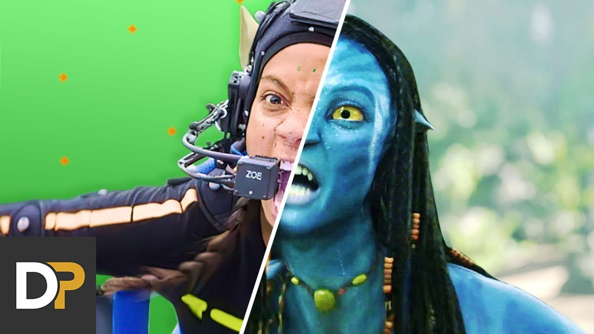
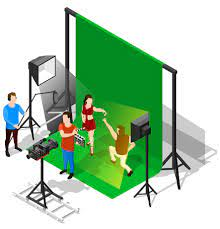
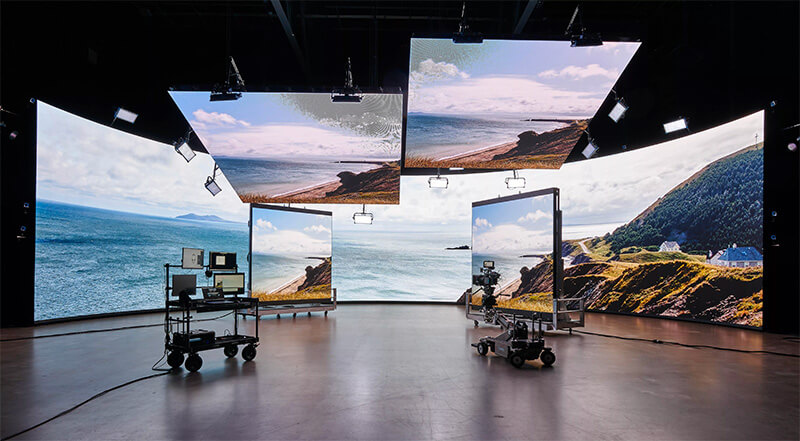
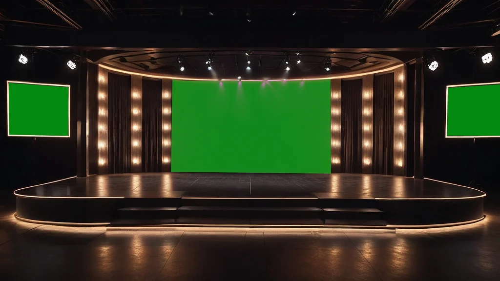

La realidad virtual (RV) ha transformado la manera en que se crean y experimentan las historias, permitiendo la construcción de mundos inmersivos con actores digitales, escenarios interactivos y sets virtuales dinámicos. A diferencia de los medios tradicionales como el cine o el teatro, la RV ofrece una experiencia participativa donde el espectador puede influir en el entorno y los personajes. Este ensayo explora el papel de los actores virtuales, el diseño de escenarios y la evolución de los sets virtuales, analizando su impacto en el entretenimiento, la educación y otras industrias.
Los actores virtuales son representaciones digitales de personajes, que pueden ser: Avatares predefinidos: Personajes creados mediante modelado 3D y animación (ej. NPCs en videojuegos).
Réplicas humanas: Digitalizaciones de actores reales mediante performance capture (ej. Andy Serkis como Gollum en El Señor de los Anillos).
IA generativa: Personajes controlados por inteligencia artificial que interactúan de forma autónoma (ej. Chatbots en experiencias VR).
Motion Capture: Sensores y cámaras registran movimientos de actores reales para animar personajes digitales.
Inteligencia Artificial: Sistemas como Unreal Engine MetaHumans crean rostros y expresiones realistas.
Voz y Diálogos: Text-to-Speech (TTS) y síntesis de voz permiten interacciones dinámicas.

Cine y Videojuegos: Películas como Avatar y juegos como The Last of Us Part II usan actores virtuales hiperrealistas.
Educación: Tutores virtuales enseñan idiomas o historia en entornos inmersivos.
Publicidad: Influencers digitales como Lil Miquela promocionan marcas en el metaverso.
La efectividad de la RV depende de su capacidad para engañar al cerebro y hacerle creer que el entorno virtual es real. Esto se logra mediante:
Los escenarios en RV deben ser:
Interactivos: Permitir que el usuario manipule objetos o altere el ambiente.
Inmersivos: Utilizar efectos de iluminación, sonido 3D y física realista.
Optimizados: Mantener un alto rendimiento para evitar lag o mareos.


Motores de Juego: Unity y Unreal Engine permiten diseñar mundos 3D con física avanzada.
Escaneo 3D: Fotogrametría y LiDAR digitalizan lugares reales para recrearlos en RV.
Generación Procedural: Algoritmos crean paisajes infinitos (ej. No Man’s Sky).
The Mandalorian (Disney+): Usa StageCraft de Industrial Light & Magic (ILM) con pantallas LED gigantes.
Noticieros y Streamers: Presentadores usan fondos virtuales con green screen o RV.
Ahorro de costos: No se requieren construcciones físicas ni locaciones.
Flexibilidad: Cambios de escenario en tiempo real con ajustes digitales.
Posproducción acelerada: Efectos visuales integrados directamente durante la grabación.
Sincronización: La cámara debe moverse en concordancia con el entorno virtual para evitar inconsistencias.
Iluminación realista: La luz digital debe coincidir con la de los actores reales.